피코섬 이야기
아주 오래전, 피코섬은 반짝이는 생각이 모이는 평화로운 섬이었고
그곳엔 세 명의 길잡이가 함께 살고 있었습니다.
세 길잡이는
서로 다른 힘이 깃든 링고 스톤(Lingo Stone)을 하나씩 지니고 있었습니다.
링고 스톤은 누군가를 돕고 새로운 일에 도전할 때 생기는 링고 에너지(Lingo Energy)가 모여야 빛을 낼 수 있었습니다.
피코섬 사람들은 각자의 꿈을 나누었고, 길잡이들은 모인 에너지로 마을과 숲을 더 살기 좋은 곳으로 바꾸었습니다.
그러던 어느 날 한 길잡이가 다른 이들의 빛을 부러워하며 섬의 약속을 어겼고,
그가 만든 어두운 안개가 퍼지면서 피코섬의 길과 마을은 서로 단절되었습니다.
두 길잡이는 남은 힘을 모두 모아 주민들을 안전한 문 너머로 보냈습니다. 안개를 만든 무리도 섬 밖으로 밀려났지만, 피코섬에는 누구도 남지 않게 되었습니다.
사람이 떠난 피코섬은 빛을 잃고 조용해졌으며,
홀로 남은 길잡이 모비(Mobi)는 언젠가 섬의 길을 다시 잇겠다는 마음으로 오래도록 그곳을 지켰습니다.
그 후,
긴 시간이 흐른 어느 날,
한 아이가 다락방 상자 속에서 빛나는 링고 스톤을 발견했고
손을 대는 순간 작은 문이 열리며 아이는 피코섬으로 건너가게 됩니다.
낯선 섬에 도착한 아이는
그곳을 지켜 온 길잡이 '모비(Mobi)'를 만나 끊어진 길과 사라진 빛을 하나씩 되찾아 갑니다.
성장 단계와 활동 길
피코링고에서 아이의 활동 과정은 링고 단계과 스텝 혹은 루트표시로 확인할 수 있습니다.
★ 링고 단계은 아이가 어느 만큼 여러 표현을 익혔는지를 보여 줍니다.
★ 스텝과 첫걸음 길은 아이가 활동을 얼마나 이어 왔는지 나타냅니다.를 보여 줍니다.
링고 단계(Lingo Level)
▷ 링고 단계는 피코링고에서 현재 말하기 범위를 보여 주며 1단계부터 10단계로 나누어져 있습니다.
▷ 피코 레벨 1은 처음 말을 시작하는 구간이라 첫걸음 길(Roots)이라고 부르고 50개개의 작은 구간으로 이어집니다.
▷ 첫 단계는 피코링고를 시작할 때 레벨 테스트시작 수준 확인을 거쳐 정해집니다.
▷ 큰 숫자는 전체 단계를, 뒤 숫자는 그 안의 진행 구간을 뜻합니다. 활동 기록 화면에서 Lingo 1.2처럼 확인할 수 있습니다.
▷ 활동을 마칠 때마다 경험 기록이 쌓이고 다음 기준에 닿으면 다음 단계 확인단계 확인 활동을 시작합니다.
▷ 링고 단계가 오르면 피코섬의 링고 트리(Lingo Tree)가지와 잎도 조금씩 늘어납니다.
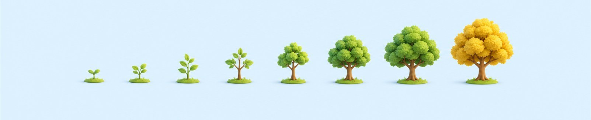
스텝(Step)
▷ 스텝은 피코링고 2단계 이후의 활동 진행 정도를 뜻합니다.
▷ 활동을 마치면 링고 에너지가 쌓입니다. 정해진 양에 닿으면 다음 스텝으로 이동합니다.
▷ 새 스텝에서는 피코섬 꾸미기 소품, 새로운 활동, 다른 이야기를 들려줄 친구가 열립니다.

루트(Root)
▷ 첫걸음 길은 피코링고 1단계(1.1~1.9)의 활동 진행 정도를 뜻합니다.
▷ 아직 영어 답변이 낯선 아이를 위한 듣기와 따라 말하기 중심 구간입니다.
▷ 짧은 낱말과 문장을 충분히 만나도록 모두 50개의 작은 길로 차례로 이어집니다.
▷ 첫걸음 길을 모두 지나면 스텝 활동으로 이어지고 피코 마을의 여러 장면을 자유롭게 탐색합니다.
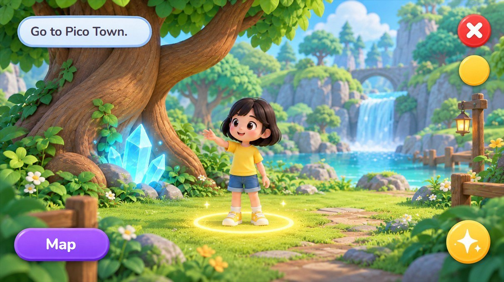
활동마다 따로 쌓이는 기록으로도 아이의 변화를 살펴볼 수 있습니다
▷ 각 활동은 목표에 따라 별, 경험 기록처럼 서로 다른 진행 표시를 사용합니다.
1. 장면 완료형 활동 : 장면을 마치며 모은 별이 기준에 닿으면 다음 구간이 열립니다.
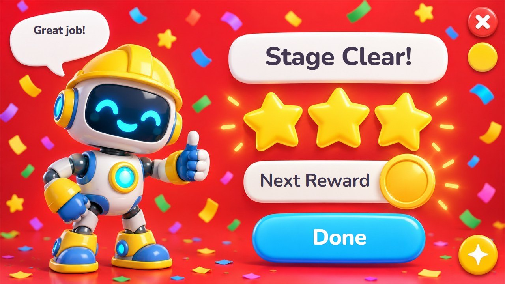
2. 경험 누적형 활동 : 활동 뒤 쌓인 경험 기록이 기준을 채우면 단계가 바뀝니다.
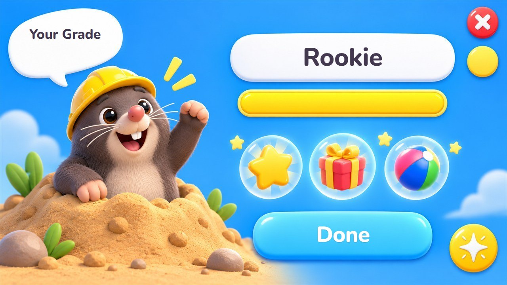
활동 단계가 오르면 피코섬에도 변화가 나타나새로운 장면을 발견하는 작은 목표가 생깁니다.
아이에게 맞는 이용 방법
피코링고에서는 아이가 관심 있는 활동을 직접 고를 수 있습니다!
아이가 피코섬을 탐색하는 동안, 맞춤 활동 경로는 최근 시도와 반응을 살펴
덜 만난 표현과 익숙한 주제를 알맞게 섞어 보여 줍니다.
[편안하게 이용하는 흐름]
▷ 새 스텝에서 받은 소품으로 피코섬을 꾸미며 다음 활동의 목표를 만듭니다.
▷ 목표를 이어 가는 기본 방법은 아이가 스스로 활동을 고르는 것으로 합니다.
▷ 관심 주제와 당일 기분에 따라 서로 다른 순서로 이용해도 괜찮습니다.
하지만!
무엇부터 할지 고르기 어려운 아이
'오늘은 추천대로 해 볼래요!'라고 생각하는 아이
여러 영역을 고르게 만나고 싶은 경우에는
피코링고의 오늘의 활동 제안(Today's Picks)을 참고해 순서대로 시작해 보세요.
(자세한 기준은 '학습 가이드 > 오늘의 활동 제안'에서 확인할 수 있습니다.)
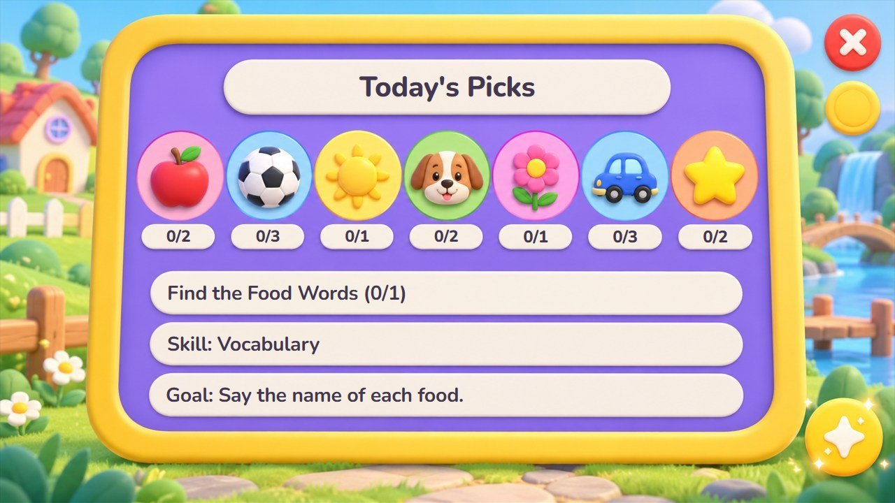

[링고 단계에 따른 이용 방법]
1~2 레벨
◇ 1~2단계는 영어로 바로 답하는 일이 아직 낯선 시기입니다.
◇ 도움 문장을 듣고 따라 답할 수 있는 첫걸음 모드(Beginner Mode) 부터 이용해 보세요.
◇ 충분히 듣고 따라 하면서 자주 쓰는 낱말과 짧은 표현에 익숙해집니다.
3~4 레벨
◇ 3~4단계는 짧은 대화는 가능하지만 낯선 장면에서는 말이 막힐 수 있습니다.
◇ 먼저 자기 말로 답해 본 뒤 표현 범위를 넓히고 싶을 때 도움 문장을 함께 살펴다른 답도 시도해 보세요.
5 레벨 이상
◇ 5단계부터는 익숙한 생활 대화를 듣고 뜻을 찾는 일이 한결 편안해집니다.
◇ 실제 친구에게 이야기하듯 아이가 직접 문장을 골라 답하도록 기다려 주세요.
◇ 도움 문장은 대화가 오래 멈췄을 때 참고 자료로만 열어 보세요.
※ 첫걸음 모드(Beginner Mode)
첫걸음 모드 켜기
▷ 기본 화면 오른쪽 위에서 [전체 메뉴] > [이용 설정] > Mode 순서로 이동해 첫걸음 모드를 켤 수 있습니다.
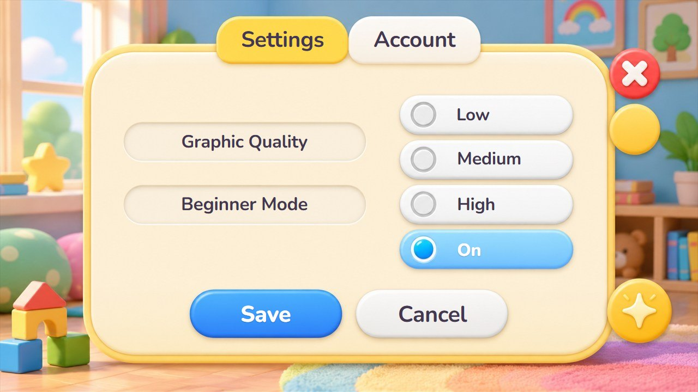
첫걸음 모드에서 달라지는 점
▷ 대화할 차례마다 짧은 답변 예시가 바로 나타납니다.
▷ 생각을 마친 뒤 말할 수 있도록 마이크가 직접 누르기 방식으로 바뀝니다.
▷ 직접 누르기 방식에서는 마이크 단추를 누른 채답한 다음 손을 떼면 녹음이 끝납니다.
→ 시간 표시가 있던 활동도 서두르지 않고 문제를 살펴볼 수 있도록 제한 없이 진행됩니다.
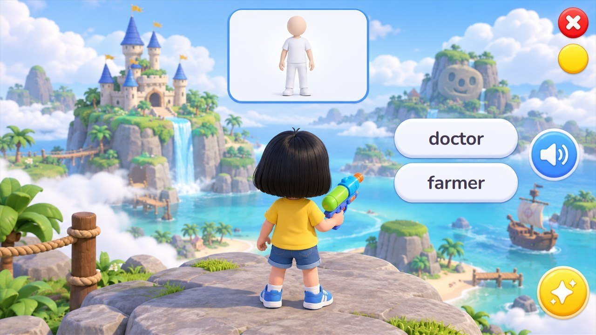
조작 방법
[캐릭터 움직이기]
가고 싶은 장소를 누르면캐릭터가 선택한 지점까지 걸어갑니다.
★ 진행 방향의 화면을 이어서 누르면 캐릭터가 그쪽으로 계속 움직입니다.
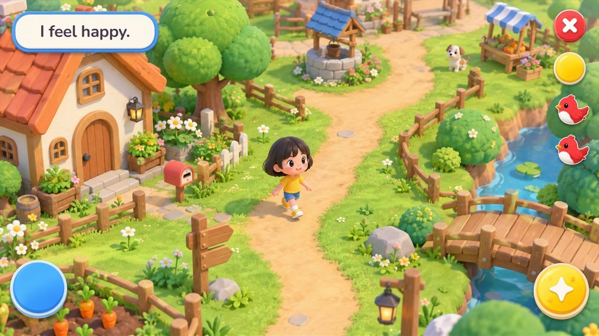
★ 화면을 빠르게 두 번 누르면캐릭터가 가볍게 점프합니다.
★ 낮은 턱과 작은 장애물은 점프로 지나갈 수 있습니다.
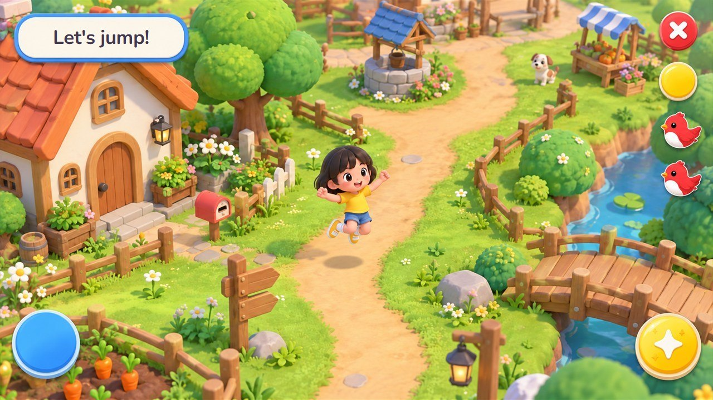
[마이크로 답하기]
피코링고의 대화 활동은 기기 마이크를 사용합니다.
마이크 선택 화면은 사용하는 버전에 따라 다르게 표시될 수 있습니다.
현재 방식에서는 상대의 말을 듣고 답한 다음 마이크 단추를 누르면한 차례가 끝납니다.
★ 활동을 시작하면 마이크는 자동 듣기 방식으로 먼저 설정됩니다.
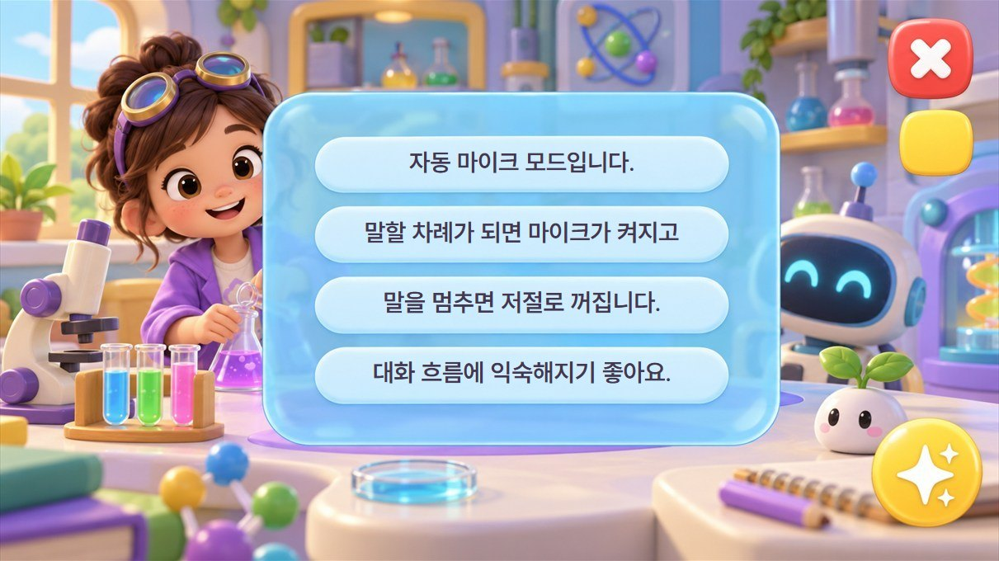
★ 직접 누르기 방식으로 바꾸면 답할 때마다 화면 아래 마이크 단추를 누른 채 말합니다.
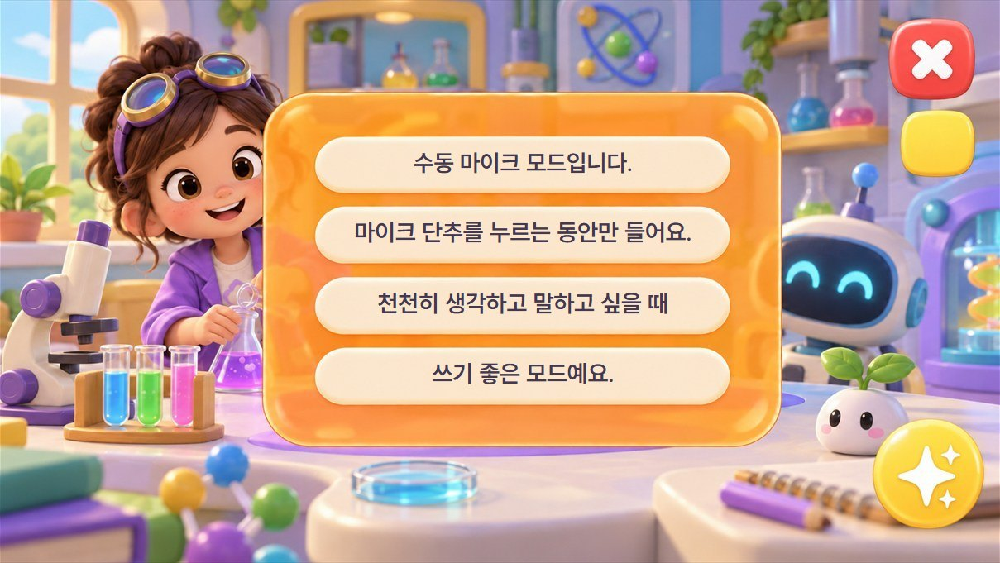
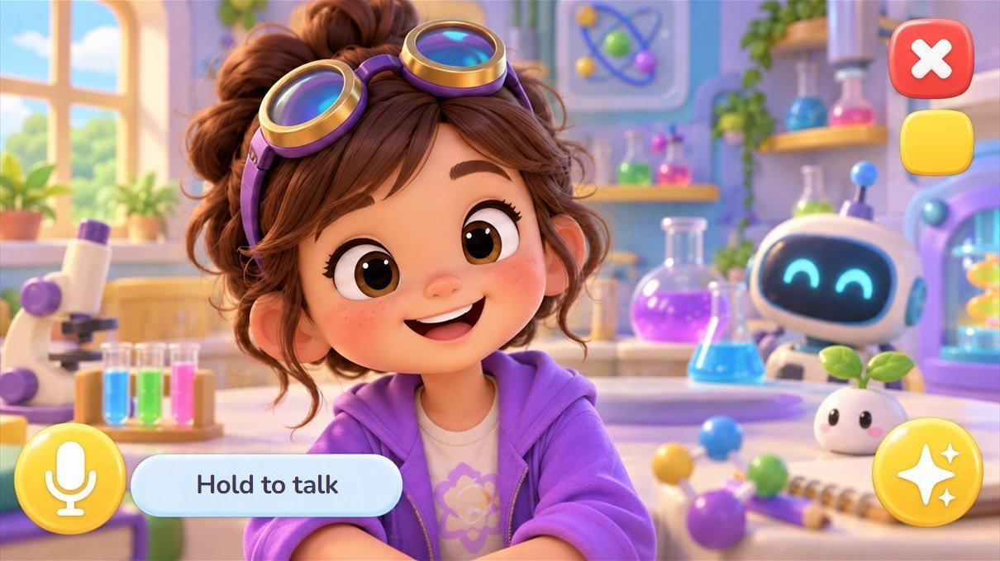
★ 대화 중에는 화면 왼쪽 위의 Auto/Manual 전환 단추로 방식을 바꿀 수 있습니다.
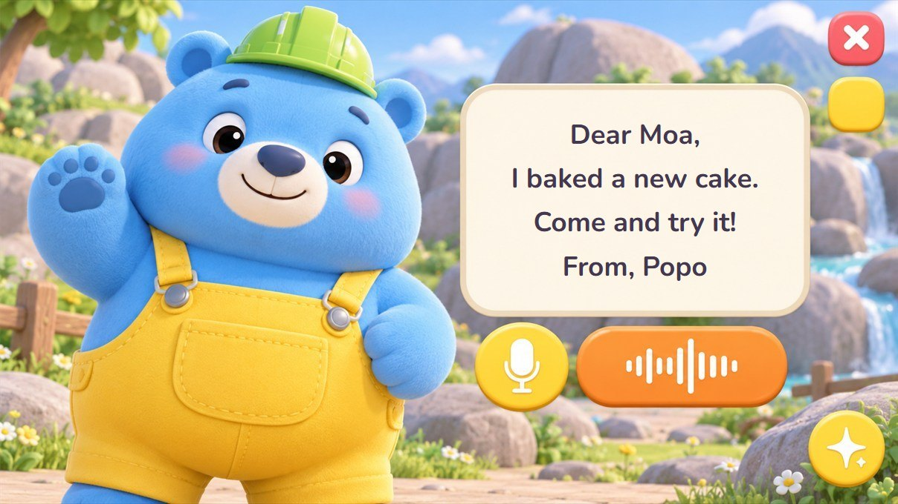
활동 기록과 아이템
피코링고의 활동 기록에는 다음 스텝으로 이어지는 링고 에너지와 꾸미기 소품을 얻는 데 쓰는 별조각(Pin)이 있습니다.
별조각을 모으는 방법
★ 여러 활동을 끝내면 완료 기록과 함께 받을 수 있습니다.
★ 대화 미션, 역할 놀이, 누리의 낱말 놀이, 상상 만들기에서 별조각을 만날 수 있습니다.
★ 쓰지 않는 소품을 판매정리해 별조각으로 바꿀 수도 있습니다.
★ 메뉴의 가방에서 사용하지 않거나 여러 개 모인 소품을 골라 Sell 정리 단추로 교환할 수 있습니다.
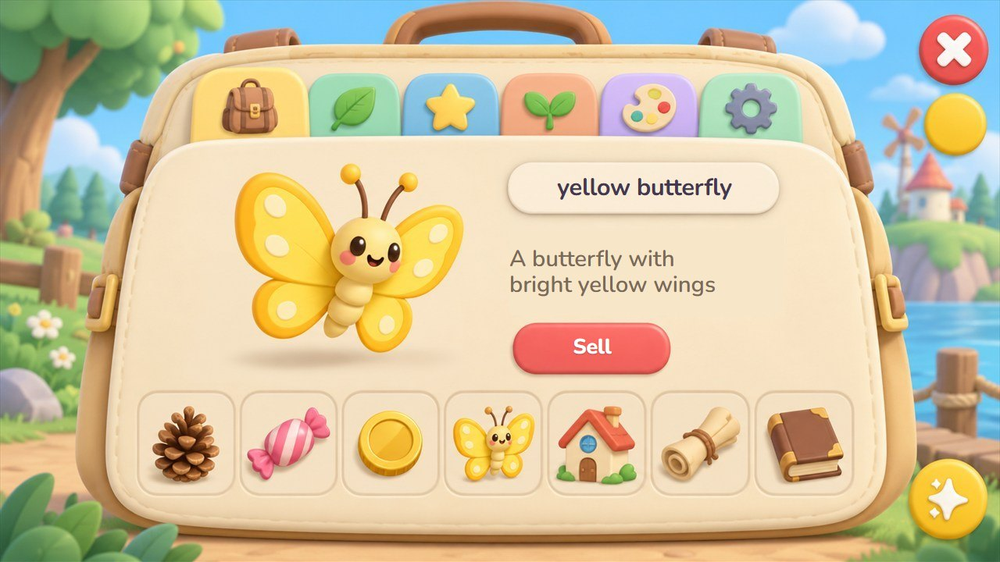
★ 피코 상점(SHOP)에서 필요한 소품으로 바꿀 수 있습니다.
★ 상점은 화면의 메뉴 또는 교환 기계에 표시된 SHOP 단추로 들어갑니다.
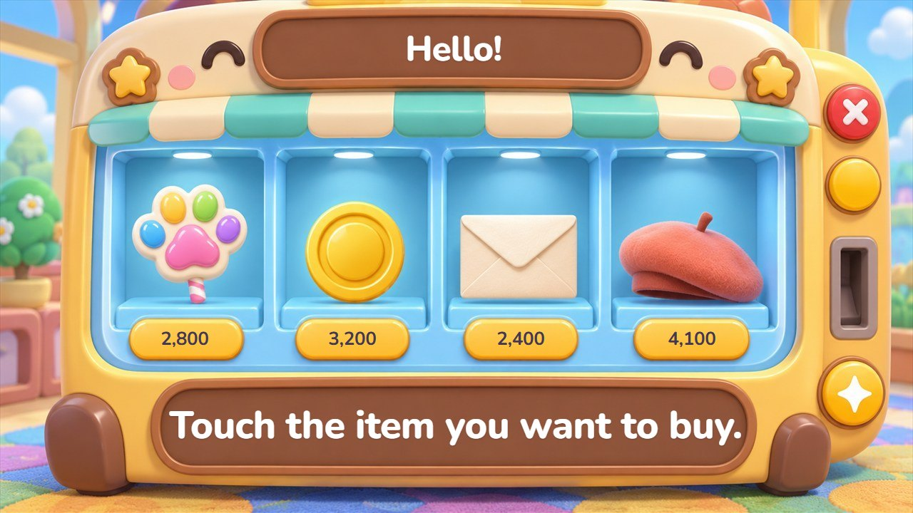
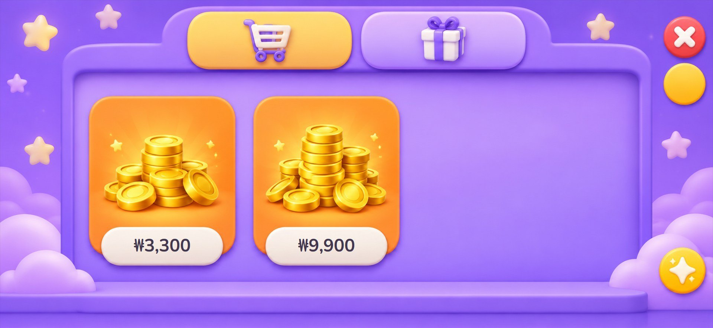
* 상점의 소품 종류와 열리는 시점은 운영 설정에 따라 달라질 수 있습니다.
별조각으로 할 수 있는 일
★ 피코섬 곳곳의 링고 교환 기계에서 원하는 소품을 고를 수 있습니다.
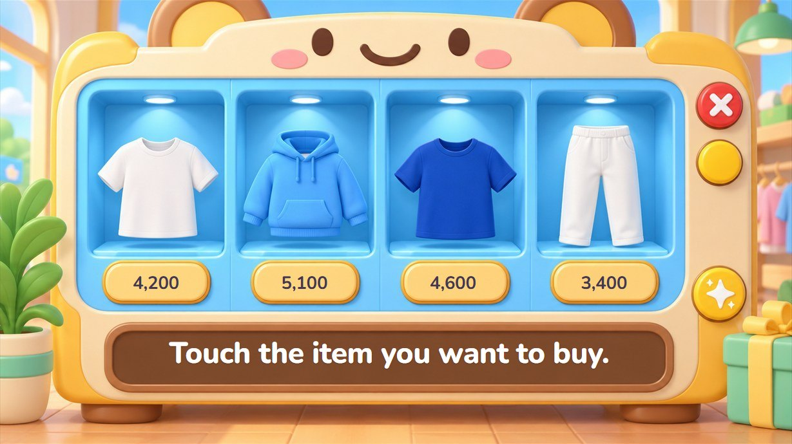
★ 내 방과 피코섬을 바꾸는 꾸미기 소품을 선택할 수 있습니다.
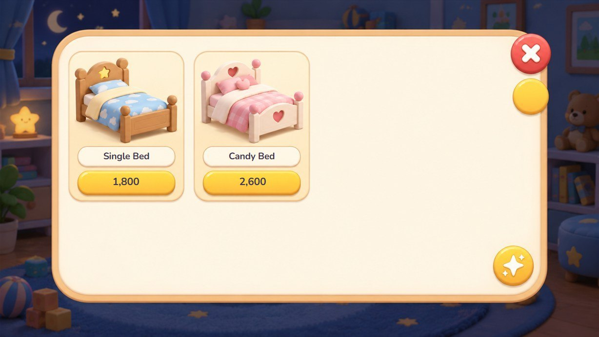

★ 동물 친구, 생각 실험, 상상 만들기 활동에 들어갈 수 있는 활동권으로도 바꿀 수 있습니다.
화면 구성
피코링고 기본 화면은 여섯 부분으로 나뉩니다.
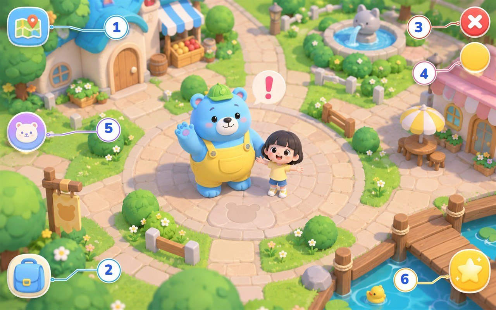
① 활동 보드(Activity Board)
오늘의 제안, 이야기 미션과 이어서 할 활동을 모아 보여 줍니다.
② 링고 스톤(Lingo Stone)
현재 스텝과 다음 구간까지 모인 링고 에너지를 확인합니다.
링고 스톤을 누르면 피코섬에서 바뀐 장소를 한눈에 볼 수 있습니다.
③ 메뉴
My Journey에서는 꾸민 피코섬을, Backpack에서는 모은 소품을, Closet에서는 의상을 확인합니다. 이용 안내도 이 메뉴에 있습니다.
보호자 메뉴에서는 이용 시간을 살피고 기본 설정을 바꾸거나 문의할 수 있습니다.
④ 뜻 보기 단추
누르고 있는 동안 현재 영어 문장의 뜻을 보여 줍니다.
⑤ 새 소품 알림
새 소품이나 활동이 열리면 NEW 표시로 알려 줍니다.
⑥ 헬프 버튼
다음 행동이 헷갈릴 때 누르면 화면에서 길을 안내합니다.
피코섬 꾸미기
★ 피코섬의 건물과 소품을 여러 테마로 바꿔 꾸밀 수 있습니다.
★ 스텝을 지나갈수록 고를 수 있는 테마가 늘어납니다.
[피코섬을 꾸미는 순서]
1. 마을에서 [도구 아이콘]이 표시된 장소를 누르면 꾸미기 화면이 열립니다.
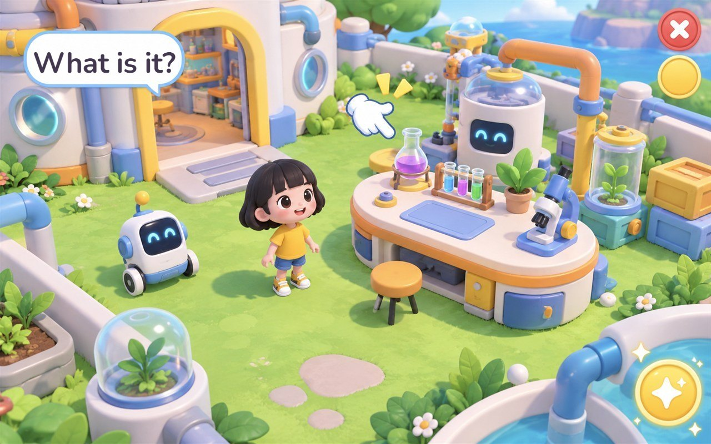
2. 바꿀 수 있는 곳에는 [도구 아이콘]이, 새 테마에는 [New] 표시가 붙습니다.
3. 원하는 장소의 아이콘을 누르면 해당 공간에 맞는 소품 목록이 열립니다.
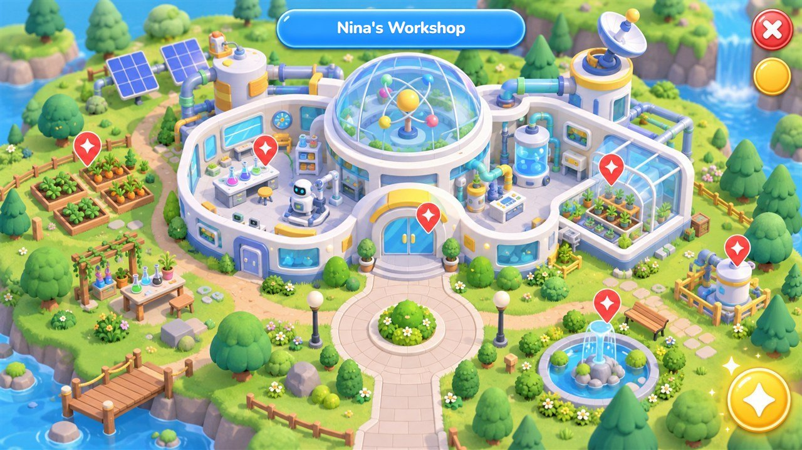
4. 테마를 고르고 별조각을 사용하면 선택한 모습으로 바뀝니다.
5. 한 번 얻은 소품은 별도 비용 없이 다시 배치할 수 있습니다.
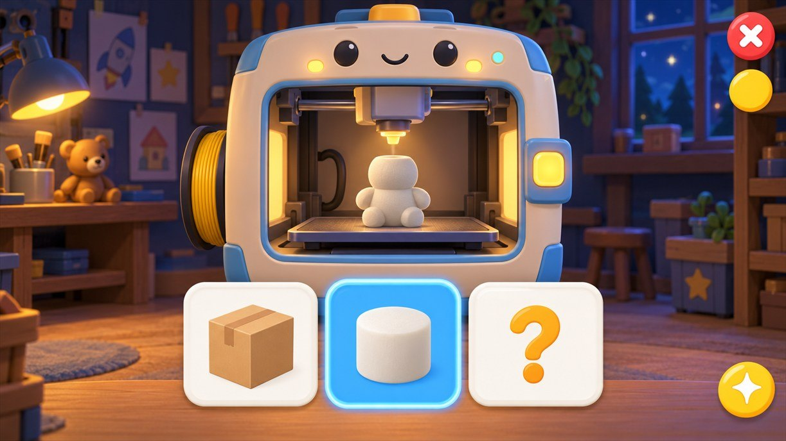
내 공간 꾸미기
★ 이야기 미션에서 작은 집을 완성하면 안쪽 공간도 꾸밀 수 있습니다.
★ 내 방부터 시작해 거실과 주방 순서로 새로운 공간이 열립니다.
★ 가구와 장식은 스텝 완료 기록이나 피코 상점에서 얻을 수 있습니다.
★ 운영 설정에 따라 욕실이나 작업실 같은 공간을 더할 수 있습니다.
[내 공간에 소품 놓기]
1. 집 안으로 들어가 왼쪽 아래 집 모양 [꾸미기 단추]를 누르면 가구 배치 화면이 열립니다.
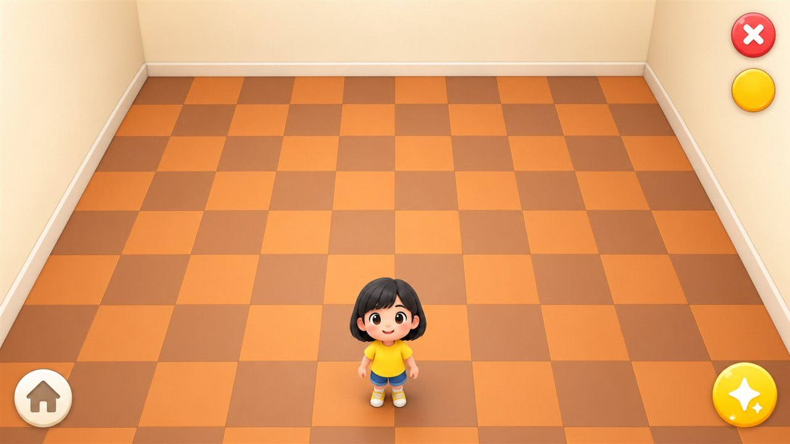
2. 가구 분류를 고르면 현재 보유한 소품을 모아 볼 수 있습니다.
3. 소품 목록 오른쪽 끝에 있는 [+] 단추를 누르면 피코 상점에서 새 소품을 살펴볼 수 있습니다.
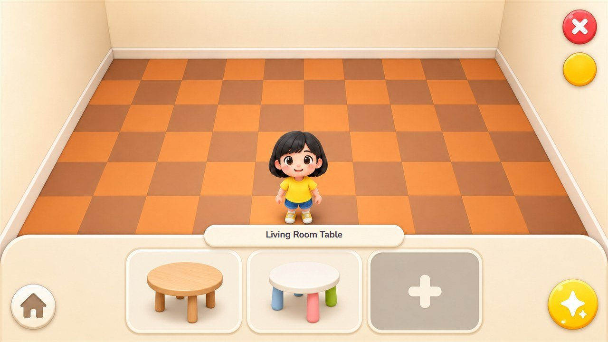
4. 놓을 소품을 손가락으로 끌어 원하는 자리에 옮깁니다.
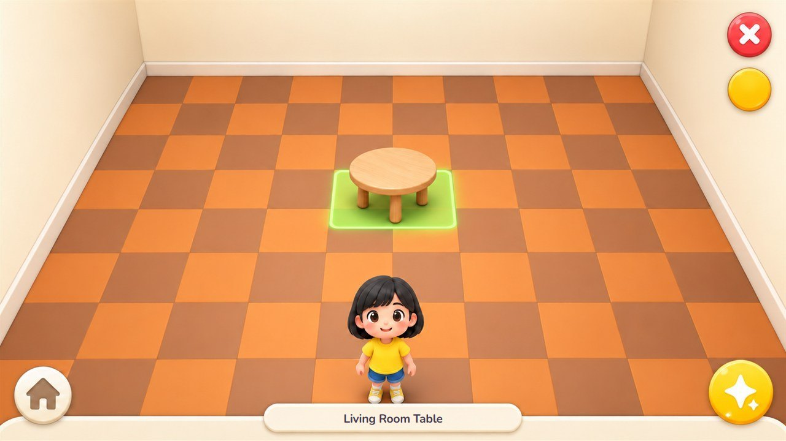
5. 놓인 소품을 누르면 방향을 돌리거나 목록으로 되돌릴 수 있습니다.
6. 되돌리기 화살표가 있는 [이전 상태 단추]를 누르면 꾸미기를 시작하기 전 배치로 되돌아갑니다.
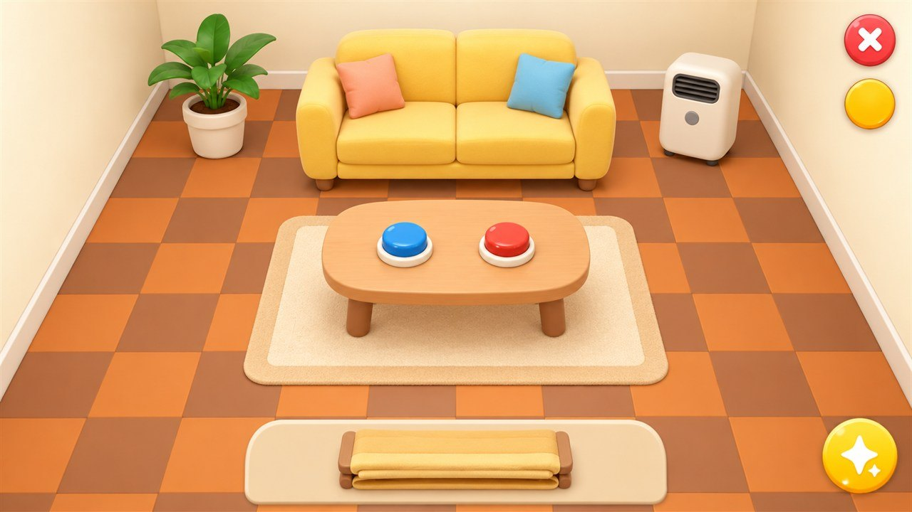